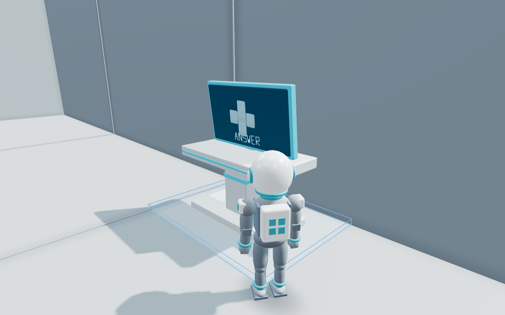

Gameplay Visual Fidelity Upgrade · Phase A
左：従来描画 ／ 右：改善後。同一のStage 1-1・キャラクターポーズ・カメラで比較。画像クリックで原寸表示。Home、ゲーム操作、キャラクターの形状・アニメーションは変更していません。
Home Showcaseとの比較
既存Home Showcase（変更なし） 改善後のリアルタイムGameplay
改善後のリアルタイムGameplay
正式なRigged GLBへの置換はPhase B。本ページは描画品質の比較で、完全に同じ人物表現を目指すGateではありません。